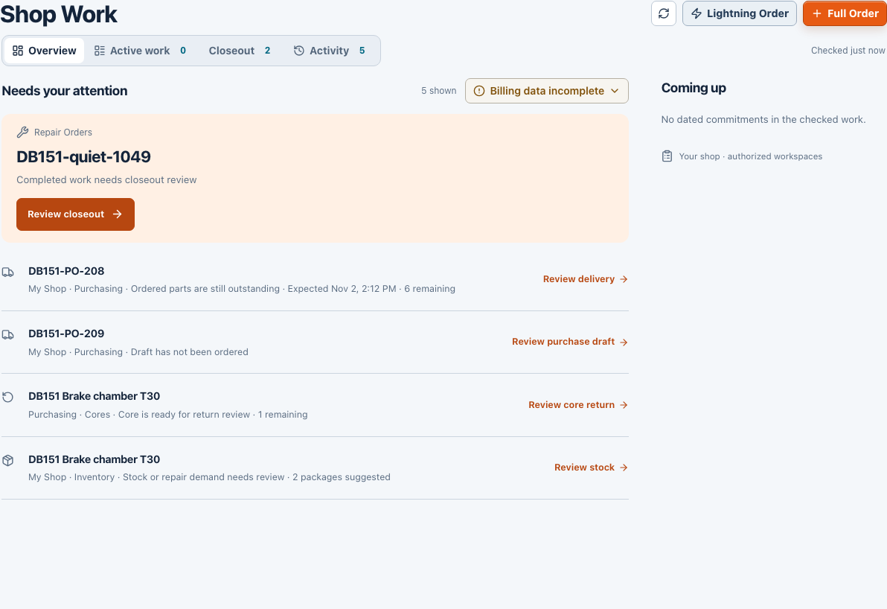
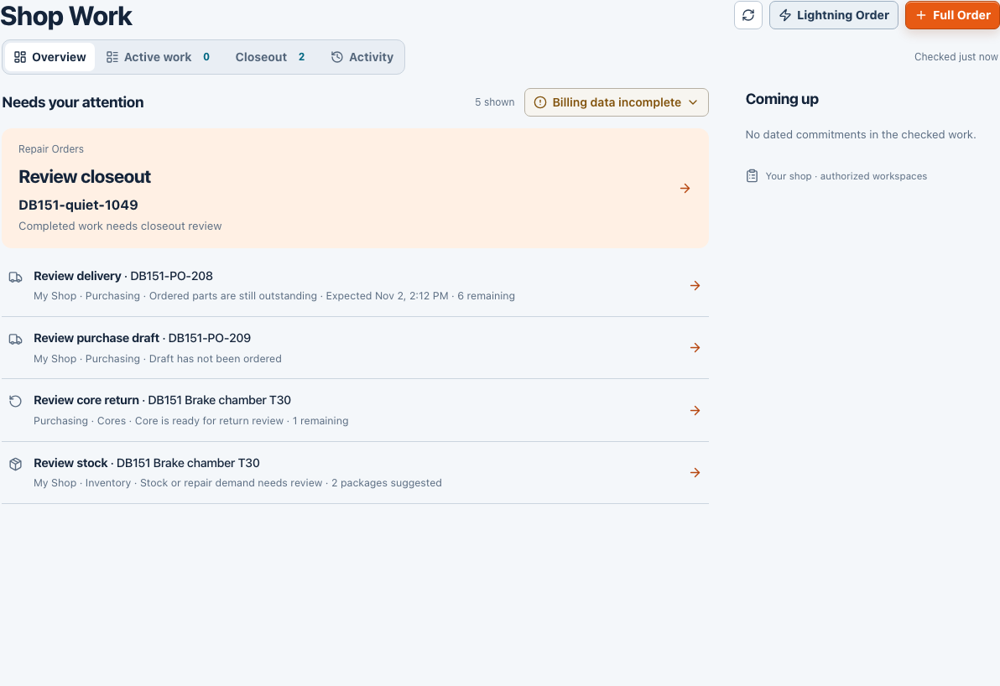
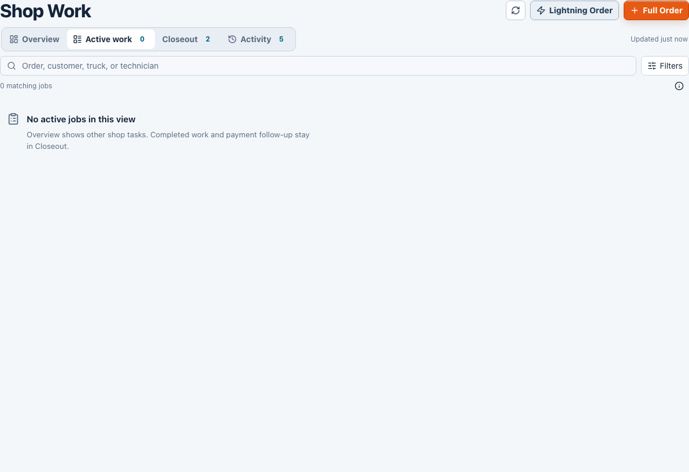
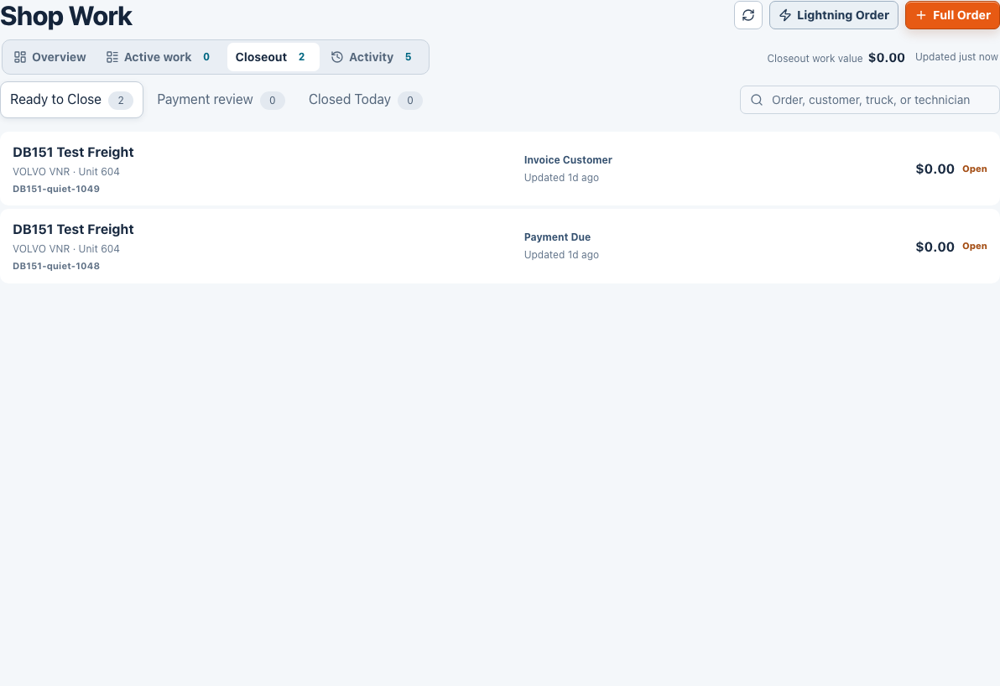
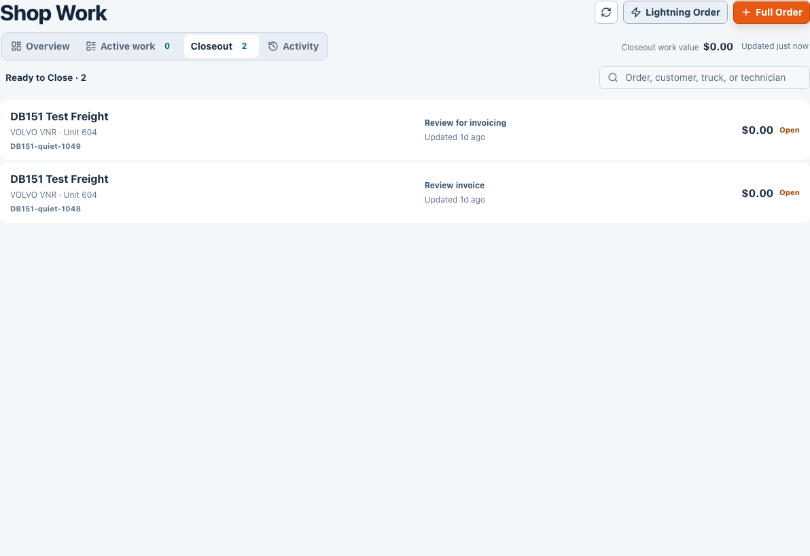
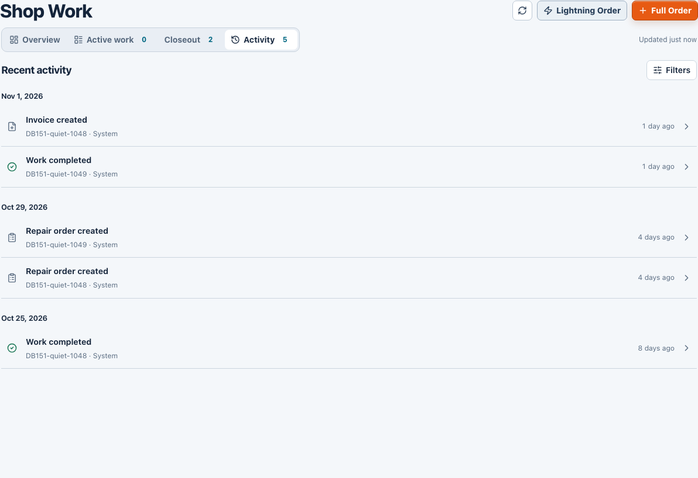

BeforeTwo rows led with “DB151 Brake chamber T30.” The operator had to read across to distinguish stock from core recovery.
AfterEach row starts with its action and links to one record. Review stock opens Inventory; Review core return opens Purchasing.
BeforeSearch, Filters, timing help and a zero count stayed on screen. The empty state told the operator to look in two other views.
AfterThe empty state offers the next authorized task directly: Review closeout opens repair 1049. A shop with no confirmed task gets a link to Overview instead.
BeforeReady to Close had two orders. Payment review and Closed Today were still selectable at zero. “Payment Due” implied a balance from an order status alone.
AfterA single populated queue is a label. When multiple queues have records, choose between them. An invoiced order says Review invoice; opening it does not collect money.
BeforeThe 5 beside Activity looked like five tasks. Event rows were buttons; opening a record could lose the filters.
AfterHistory has no workload badge. An event names and links its repair; Back, Close and reload preserve the filter. A no-match result offers Clear activity filters.